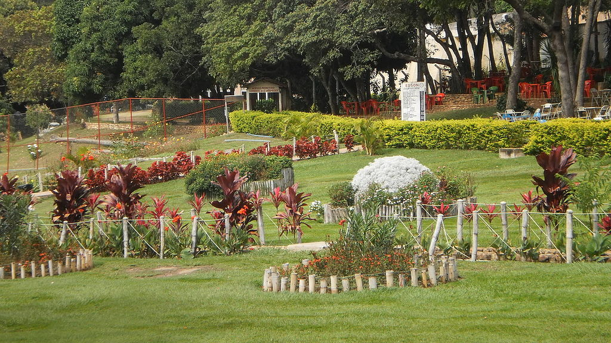
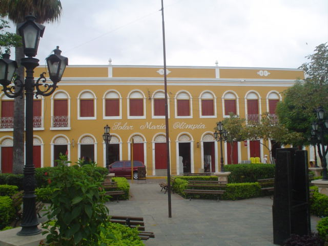
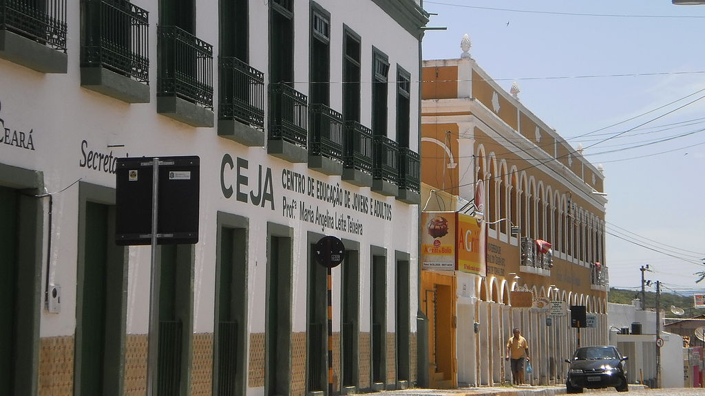
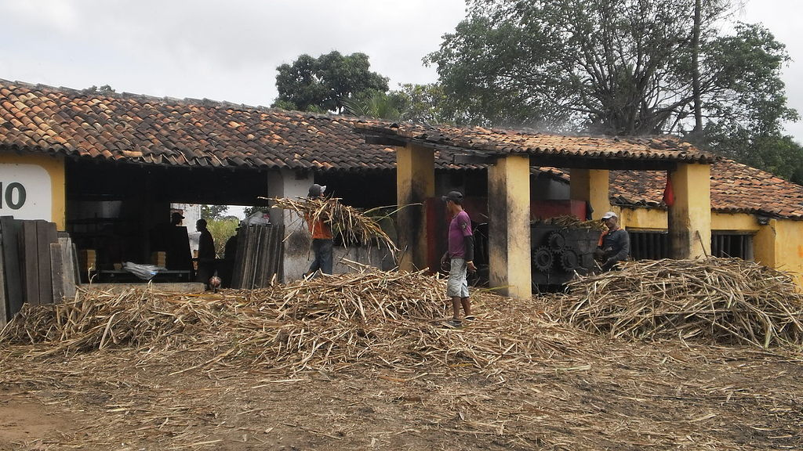

Informações técnicas sobre relevo, população, IDH etc.
| INFORMAÇÕES | |
|---|---|
| Municípios limítrofes | Crato, Juazeiro do Norte, Jardim, Moreilândia e Missão Velha |
| Fundação | 17 de agosto de 1846 (174 anos) |
| Área total | 479,183 km² |
| Clima | Tropical (As) |
| IDH | 0,683 — médio |
| PIB | R$ 14 320,84 |
| INFORMAÇÕES TERRITORIAIS | |
|---|---|
| Número de habitantes | 59 732 habitantes |
| Superfície de Barbalha |
59 931 hectares
599,31 km² (231,39 sq mi) |
| Densidade populacional | 99,7 ha./km² |
| Altitude de Barbalha | 415 metros de altitude |
| Coordenadas geográficas decimais |
Latitude:
-7.30551
Longitude: -39.3025 |
| Coordenadas geográficas sexagesimais | Latitude: 7° 18' 20'' Sul , Longitude: 9° 18' 9'' Oeste |
| INFORMAÇÕES DO MUNICÍPIO | |
|---|---|
| Endereço da Prefeitura Municipal de Barbalha |
Barbalha
Prefeitura de Barbalha
Loteamento Jardim dos Ipes s/n - ALTO DA ALEGRIA BARBALHA - CE, 63180-000 Brasil Work +55 88 3532-3022 Fax +55 88 3532-1640 |
| Telefone da prefeitura |
(88) 3532-3022
Internacional: +55 88 3532-3022 |
| Fax |
(88) 3532-1640
Internacional: +55 88 3532-1640 |
| Endereço eletrônico da prefeitura |
pmb@bayde.jbc.com.br
|
| Site oficial do município | barbalha.ce.gov.br |
| INFORMAÇÕES DO ADMINISTRATIVAS | ||
|---|---|---|
| Prefeito de Barbalha | GUILHERME SAMPAIO SARAIVA | |
| Partido politico | PDT | |
| INFORMAÇÕES DE TRANSPORTE | |
|---|---|
| Transporte urbano disponível | - |
| Aeroporto |
Aeroporto Regional do Cariri
Aeroporto de Picos
247 km
Aeroporto de Paulo Afonso
260.4 km
|
| INFORMAÇÕES DE DISTÂNCIA A OUTRAS CIDADES | ||
|---|---|---|
| São Paulo : 1971 km | Rio de Janeiro : 1786 km | Brasília : 1332 km |
| Salvador : 637 km | Belo Horizonte : 1480 km | Manaus : 2344 km |
| Curitiba : 2279 km | Fortaleza : 408 km mais perto | Goiânia : 1503 km |
| Belém : 1211 km | Porto Alegre : 2820 km | Guarulhos : 1949 km |
| Campinas : 1925 km | São Luís : 768 km | São Gonçalo : 2.105 km |
| Distância calculada em linha reta! | ||
Conheça mais sobre a história de Barbalha.
As terras localizadas às margens do Riacho Salamanca eram habitadas pelos índios Kariri, antes da chegada das entradas no interior brasileiro, durante o século XVII. Os integrantes das entradas, militares e religiosos, mantiveram os primeiros contatos com os nativos, estudaram todas as regiões dos Cariri, catequizavam os indígenas e os agruparam em aldeamentos ou missões. Este contato entre exploradores e nativos repercutiu profundamente na formação cultural do lugar, principalmente no que tange à difusão de "entes do imaginário popular", tais como "papafigo, pai-da-mata, rasga-mortalha, almas do outro mundo, lobisomem, o diabo, entre outros".
Os resultados destes contatos e descobrimentos desencadearam notícias de que na região existiria ouro em abundância e em seguida desencadeou-se uma corrida para os sertões brasileiros, onde famílias oriundas de Portugal, sonhando com as riquezas de terras inexploradas e com a esperança de encontrar ouro. Queriam enriquecer e aumentar seu prestígio pessoal perante a corte portuguesa.
A busca do metal precioso, nas ribanceiras do Rio Salgado, trouxe para a região do Sertão do Cariri, a colonização e com consequência a doação de sesmarias, o que permitiu o surgimento de lugarejos e vilas. Neste contexto surge Barbalha, um núcleo urbano que cresce ao redor da capela de Santo Antônio, fundada nas terras de Francisco Magalhães Barreto e Sá, que era parente de Mem de Sá, terceiro Governador-Geral do Brasil. De Francisco Magalhães descende a família Sá Barreto, cujos membros incluem Cid Feijó Sampaio e seu sobrinho-neto Eduardo Campos, governadores de Pernambuco, Leão Sampaio, Deputado Federal, Gregório Pereira Pinto, patriarca de Terra Nova-PE, Luiz Filgueiras Sampaio empresário, Argemiro Sampaio, prefeito de Barbalha e diversas outras personalidades de destaque no cenário regional. A cidade participou de importantes momentos da história nacional. A Revolução Pernambucana de 1817, a no Guerra de Independência do Brasil Maranhão e a Confederação do Equador tiveram a participação do Capitão-mor do Crato, o baiano José Pereira Filgueiras que residia no Sítio São Paulo, neste município, com a participação de Bárbara de Alencar e seus filhos Tristão Alencar Araripe e José Martiniano de Alencar (pai do escritor José de Alencar). Dessas famílias descendem Antônio Correia Sampaio Filgueiras que participou da construção da Igreja do Rosário e Romão Pereira Filgueiras Sampaio prefeito de Salgueiro-PE. Importante para a história do município foi também a Casa Sampaio e o Engenho Tupinambá, da família Sá Barreto Sampaio.
As cidade, situada na Chapada do Araripe, servia como um verdadeiro oásis na paisagem árida do Sertão Nordestino e atraiu a instalação de engenhocas de rapadura, de onde baseou sua economia os primeiros séculos de sua história, no século XIX passou a abrigar alguns empreendimentos comerciais e no século XX assumiu a sua vocação no setor de serviços. Em 1926, passaram pela cidade de Lampião e seu bando, que estavam a caminho de Juazeiro do Norte para integrar o Batalhão Patriótico. Por esta ocasião conversou com líderes locais e jornalistas.
Há registros de que a cidade, ainda em seu estágio embrionário, sofreu um saque empreitado por um grupo composto por, aproximadamente, 2000 jagunços, os quais pilharam os valores que encontraram, e atearam fogo em milhares de contos de réis, causando um impacto na economia local e impedindo o crescimento do lugarzinho, que desfrutava de relativa prosperidade. Houve, ainda, um segundo saque, mas bem depois do primeiro. Desta vez, o fato se deu quando da modificação do traçado da Rede de Viação Cearense (RVC). Todavia, em 1950, a ferrovia, enfim chegou, junto com a eletricidade, vinda de Paulo Afonso, em 1961. Assim, a cidade voltou a crescer.
Os padres salvatorianos tem destacada atuação no âmbito cultural e educacional da cidade, além do religioso. Por muitos anos dirigiram o Colégio Santo Antônio e coordenam os festejos de santo padroeiro no mês de junho. Dentre os religiosos dessa congregação estão Padre Agostinho Mascarenhas, Padre Mário, Padre Renato Simonetto, dentre outros. Padre Agostinho foi, além pároco, diretor do referido colégio, conselheiro e líder espiritual animando a vida religiosa quando convidou a Comunidade Católica Shalom para criar um núcleo em Barbalha. A julgar pela quantidade de referências presentes na cidade: Biblioteca Municipal Padre Agostinho, Rua Padre Agostinho Mascarenhas, Residencial Padre Agostinho, dentre outros, padre Agostinho deixou uma marca especial na cidade. O referido religioso está enterrado na Igreja Matriz de Santo Antônio.
Saiba mais sobre os melhores lugares e o que fazer em Barbalha.
Por situar-se na encosta da Chapada do Araripe, a cidade conta com uma vasta área de floresta nativa repleta de fontes de água mineral e trilhas ecológicas. Além da área de proteção ambiental da Chapada do Araripe, reservas ecológicas particulares são encontradas em todo o pé da serra na cidade conferindo proteção e preservação ao importante ecossistema da flora e fauna regional, inclusive para espécies ameaçadas de extinção.
Parque ecológico do Riacho do Meio: Abriga um sítio ecológico do Geopark Araripe onde se encontram fontes e bicas de água mineral e trilhas demarcadas para visitação. Não é necessária autorização prévia para a visitação do local, mas se indica companhia de guia turístico, a despeito da sinalização nas trilhas ser boa, suficiente e estar em bom estado de conservação.
Balneário do Caldas: Situado no distrito de Caldas a mais de 700 metros de altitude, é um local de lazer com piscinas, cascatas, restaurantes e quadras esportivas. A Estância Hidromineral possui duas fontes naturais de águas termais. Chalés de veraneio e o Hotel das Fontes completam a estrutura do Balneário.
Arajara Park: Localizado no distrito de Arajara, o parque temático está a 920 metros acima do nível do mar. Piscinas, toboáguas e equipamentos de lazer além de restaurantes e bares estão à disposição do turista e da população local. Conta, ainda, com uma reserva particular que possui trilha ecológica aberta à visitação. No passeio é possível observar o Soldadinho do Araripe, ave típica da região, em seu habitat natural. A trilha termina na Gruta do Farias, uma das principais fontes de água mineral da Chapada do Araripe. Foi inaugurado em 21 de abril de 2002 e licenciado pela SEMACE e IBAMA.
Quanto ao Arajara Park, houve vozes dissidentes quando na fase de construção, visto seu alto grau de impacto ambiental, causada pela drástica alteração no cenário natural da localidade e pelo fluxo de pessoas e veículos no local . Todavia, segundo a administração do parque, em seu próprio site, a construção do empreendimento foi benéfica, tanto para as pessoas, como para o ambiente natural, já que, antes da obra, havia muitas roças no local, feitas sem as devidas técnicas de plantio e preservação, além de corte de lenha, caça e outros fatores. Ainda segundo tal informação, hoje há diversos projetos de preservação, principalmente da mata ciliar.
Barbalha se destaca na região por possuir um vasto e preservado sítio arquitetônico composto por diversos prédios públicos e particulares, o que atrai estudiosos e interessados no turismo histórico. Contando com cerca de 40 prédios, o casario do Centro Histórico de Barbalha se caracteriza pela arquitetura do período imperial com prédios construídos nos séculos XVIII e XIX.
O Centro Histórico de Barbalha se localiza no centro da cidade, numa área que compreende aproximadamente 20 ruas. Seus limites vão desde o entorno do largo do rosário até o largo do Colégio Nossa senhora de Fátima e da Rua do Vidéo à Praça Engenheiro Dória (Estação). Além das históricas Igreja Matriz de Santo Antônio e Igreja de Nossa Senhora do Rosário, prédios como o antigo Casarão Hotel e Palácio 3 de Outubro fazem parte da composição.
Segue tramitando no IPHAN o processo de inventário e tombamento do centro histórico de Barbalha, que, em 2012, recebeu investimentos do poder público, sendo lançada ordem de serviço para início das obras de revitalização. O Processo de restauração urbanística terá início com a padronização do calçamento em paralelepípedo rejuntado e seguirá com outras etapas posteriormente.
A zona rural da cidade conta com várias comunidades que vivem basicamente da agricultura, com destaque para o cultivo da cana-de-açúcar e feitura da rapadura. A visitação aos engenhos e a oportunidade de conhecer e experimentar o doce típico da cidade no momento em que está sendo feito, atrai muitas pessoas aos sítios, principalmente comitivas de romeiros, que vêm de Juazeiro do Norte nas épocas em que a peregrinação religiosa atinge seu pico. É muito comum ônibus lotados visitarem engenhos no Sítio Venha-Ver.Tem destaque o corredor rural que vai do sítio Venha-ver até o distrito de Estrela, onde se concentra a maioria dos engenhos da região.
Veja como chegar nos melhores pontos de Barbalha.